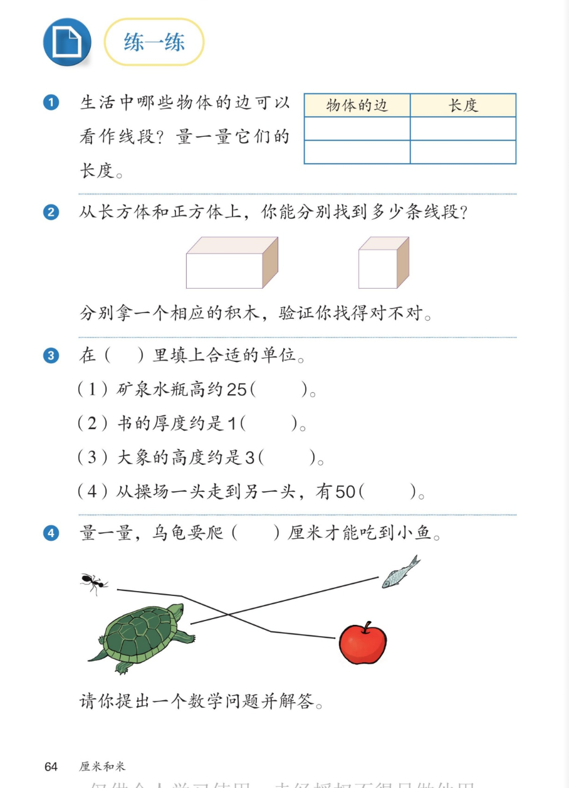

🔊 四、厘米和米 · 课本第 64 页 · 练一练 1~4
人教版《数学》二年级上册 · 有声图文带读 · 先想后看解析 · 找线段 · 填单位 · 量距离
题数
6
认知
2
强化
3
拓展
1
本页重点
长方体正方体的线段 · 选单位 · 沿线段量距离 · 提问题
🎧 分两步学：
① 解析教材图片
——纯声音读图，读到哪一块哪一块闪动提示；关键处先倒计时让你思考，再在图片下方给出解析并朗读。
② 分层提问练习
——六道分层题（认知 / 强化 / 拓展），先思考再展开解析、朗读参考答案；这一步不再回到图片。
也可以随时点任意一句话、图上任意一块单独听；点课本文字卡还会展开答案。
教材图片（点块听读，读到哪块哪块闪）

📖 人教版《数学》二年级上册 · 课本第 64 页 · 图片仅供个人学习，版权归人民教育出版社所有
🤔 想一想（点我可跳过）
课本的文字（点句子：听读 + 看答案）
第 1 题
找一找、量一量
看答案 ▾
示例：
数学书的长边
约 26 厘米；
橡皮的边
约 4 厘米；
把物体的边和量得的长度填进表格；
💡 只要直、有头，物体的边就是线段
第 2 题
长方体、正方体上的线段
看答案 ▾
长方体上能找到
12 条
线段；
正方体上也能找到
12 条
线段；
数法：
上面 4 条 + 下面 4 条 + 竖着 4 条
；
拿积木用手摸一摸、数一数验证。
第 3 题
填合适的单位
看答案 ▾
(1) 矿泉水瓶高约 25（
厘米
）；
(2) 书的厚度约是 1（
厘米
）；
(3) 大象的高度约是 3（
米
）；
(4) 操场一头到另一头有 50（
米
）。
第 4 题
乌龟吃小鱼
看答案 ▾
乌龟到小鱼之间连着一条
线段路线
；
用尺子沿路线
分段量
，加起来就是要爬的厘米数；
提问示例：
蚂蚁到苹果要爬几厘米？
量一量并解答。
分层提问练习（先想后看解析）
🧊
认知
第 2 题：长方体和正方体上各有几条线段？
看解析
🤔 想一想
解析：
都是
12 条
；
按
上 4＋下 4＋竖 4
的顺序数，不重不漏。
📝
认知
第 3 题：四道题各填什么单位？
看解析
🤔 想一想
解析：
25（厘米）、1（厘米）、3（米）、50（米）；
想实物比一比：水瓶比课桌矮，大象比人高得多。
📐
强化
第 1 题：哪些物体的边可以看作线段？怎么验证？
看解析
🤔 想一想
解析：
书的边、窗框边、铅笔棱——
直的、有头
，都是线段；
用尺子量出长度，填进表格验证。
🐢
强化
第 4 题：怎么量乌龟要爬的距离？
看解析
🤔 想一想
解析：
沿
路线的线段
一段一段量；
把各段长度
加起来
就是总距离。
💡 路线弯了不要紧，分段量再相加
❓
强化
第 4 题：你能提出一个数学问题并解答吗？
看解析
🤔 想一想
解析：
问题示例：蚂蚁到苹果要爬多少厘米？
量一量、算一算，就能解答出来。
💡 会提问也是数学本领
🌈
拓展
用积木怎样验证 12 条线段找对了？
看解析
🤔 想一想
解析：
摸一条
数一条
，数过的贴个小纸条；
按
上 4＋下 4＋竖 4
分类数，最不容易乱。
🌈 动手验证，眼睛和手一起数
① 解析教材图片
② 分层提问练习
⏹ 停止
纯声音 + 高亮跟随 · 想好才出解析
← 返回导航